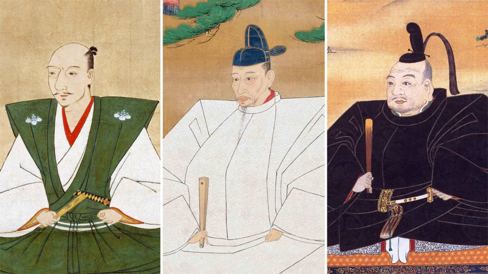
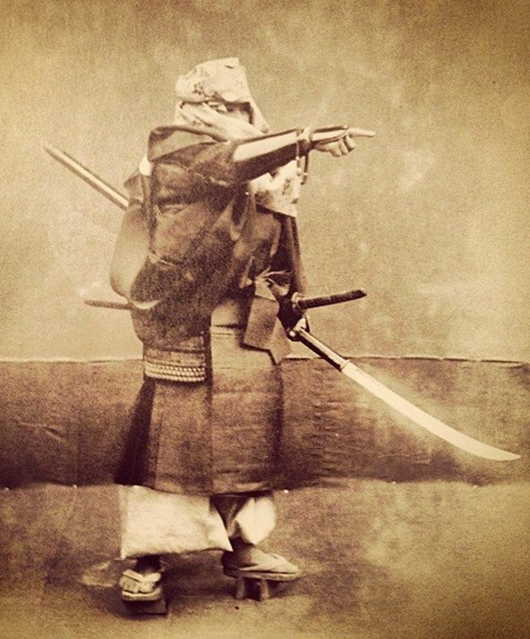
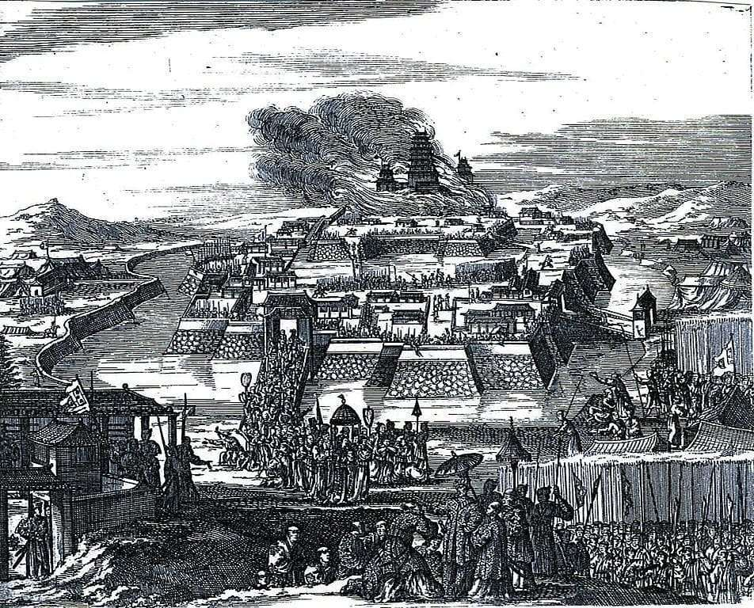

Before we head to Osaka Castle, let's take a short break. Grab a drink, and let's talk about why Osaka Castle has actually disappeared twice. The castle you're about to see isn't the original — it's actually the third version.
Let's rewind the clock about 500 years. Before this was a castle, this ground belonged to a great temple called Ishiyama Hongan-ji. Back in the early 1500s, its Buddhist monks carried weapons and armor to defend it from samurai — but over time, that defense grew into real military power. Ishiyama Hongan-ji and temples like it across the region built up armies of their own, and became forces to be reckoned with.
That worried a rising warlord named Oda Nobunaga. As he expanded his power across what is now Kanazawa, Shiga, Kyoto, and Osaka, he crushed these armed Buddhist strongholds one by one. Ishiyama Hongan-ji was no exception. Nobunaga destroyed it too.
Years later, on these same ruins, a man named Toyotomi Hideyoshi — Nobunaga's former general, who had risen to become the most powerful man in Japan — built the first Osaka Castle.
While Hideyoshi lived, the Toyotomi clan flourished. But when he died of illness in 1598, his family's power began to slip away. And in 1615, in the Summer Siege of Osaka, the Toyotomi clan finally came to an end.
And that's the third Osaka Castle — the one you're about to see today. So this ground has been, in turn: a great temple. Toyotomi Hideyoshi's castle. The Tokugawa Shogunate's castle. And today, a symbol of Osaka that draws visitors from all over the world.
With about 500 years of history in mind, let's go enjoy Osaka Castle together.


